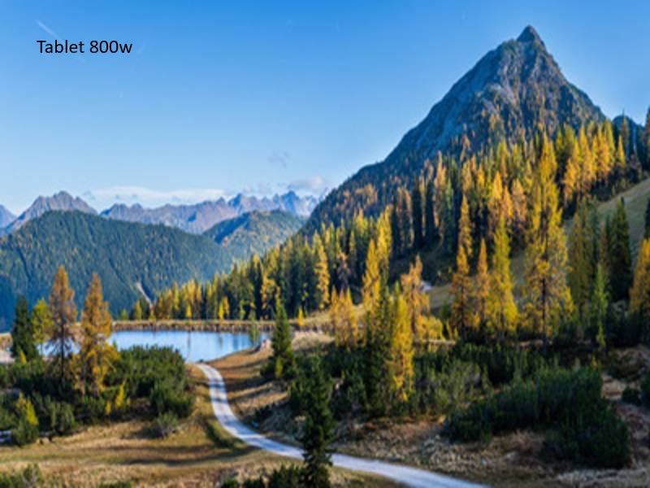

Warum Responsive Images?
Bilder machen Websites schöner, aber sie verursachen auch die höchste Ladezeit. Ein einziges zu großes Bild kann die gesamte Seite verlangsamen. Da moderne Nutzer Geräte wie Smartphones, Tablets, Laptops und 4K-Monitore verwenden, braucht jedes Gerät eine passende Bildgröße. Hier kommen Responsive Images ins Spiel.
Ziel von Responsive Images: „Das richtige Bild – in der richtigen Größe – zum richtigen Zeitpunkt.“
- schnellere Ladezeiten
- optimale Bildschärfe auf Retina-Displays
- weniger mobiler Datenverbrauch
- bessere SEO durch höhere PageSpeed-Werte
srcset – mehrere Auflösungen bereitstellen
Mit srcset gibst du dem Browser mehrere Bildvarianten. Er wählt die beste
Größe abhängig von Bildschirmbreite & DPI aus.
<img
src="img/mountain-800.jpg"
srcset="
img/mountain-400.jpg 400w,
img/mountain-800.jpg 800w,
img/mountain-1600.jpg 1600w
"
alt="Berglandschaft">
Interpretation: • 400w = ideal für Handy • 800w = Laptop/Standardmonitor • 1600w = Retina/4K
Demo: Responsive Bild
Fenster schmaler und breiter ziehen – der Browser lädt automatisch die passende Bildversion.
Geladene Version: (wird automatisch ermittelt …)
sizes – Browser sagen, wie groß das Bild im Layout ist
sizes beschreibt die tatsächliche Anzeigegröße des Bildes
im Layout – nicht die Auflösung.
sizes="(max-width: 600px) 90vw, 50vw"
Bedeutung:
- bis 600px Bildschirmbreite → Bild ≈ 90% des Screens
- alles darüber → Bild ≈ 50% der Breite
<picture> – Art Direction (unterschiedliche Bilder)
Mit picture können komplett unterschiedliche Bildvarianten geliefert werden,
z. B. anderer Ausschnitt für mobile Nutzer.
<picture>
<source media="(max-width: 600px)" srcset="img/mountain-close.jpg">
<source media="(min-width: 601px)" srcset="img/mountain-wide.jpg">
<img src="img/mountain-fallback.jpg" alt="Berge">
</picture>
Dies nennt man Art Direction: unterschiedliche Bildinhalte je nach Gerät.
Moderne Bildformate (WebP, AVIF) mit Fallback
<picture>
<source srcset="hero.avif" type="image/avif">
<source srcset="hero.webp" type="image/webp">
<img src="hero.jpg" alt="Hero Bild">
</picture>
- AVIF → beste Qualität, kleinste Dateigröße
- WebP → weit verbreitet, sehr gute Kompression
- JPEG → Fallback für ältere Browser
Kompakte Zusammenfassung
srcset: mehrere Bildgrößen
sizes: wie groß das Bild im Layout angezeigt wird
picture: unterschiedliche Bildvarianten / Art Direction
Vorteile: Geschwindigkeit ↑, Qualität ↑, SEO ↑